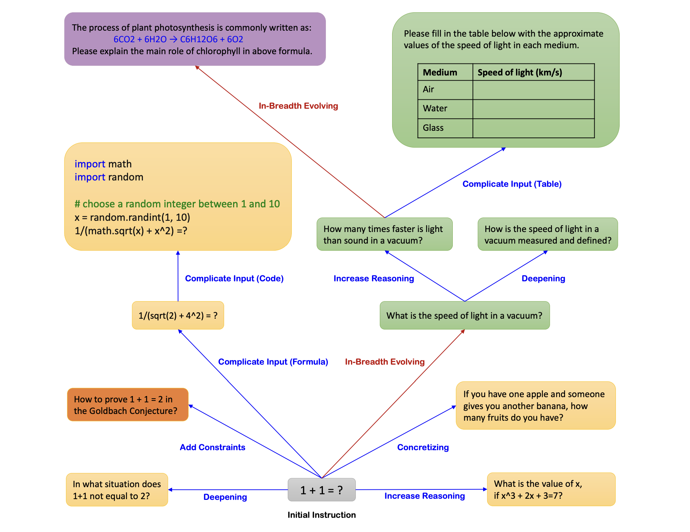

Plan
Objective
What Deepresearch means to us? - current gpt/gemini deepresearch dumps either too much information or too high level summary over all searched information - we hope we can have progressive explaintions eg top level first and then more detailed explanations for each step - by top level explantions we can skip the part not important in deeper explanations - also better verifiabe citations linking what exactly its referring to no just link of referaces
The objective is to train a comprehensive deep research agent system in the 8B parameter range (Usuing Qwen-3 8B or a similar model as the base model) that is competitive with single agent models of similar size on the following benchmarks: 1. Frames benchmark (> 63.3 which is achieved by SFR-DR-8B). 2. BrowseComp benchmark (> 0.434 which is achieved by Tongyi-DR-30B). 3. Xbench DeepSearch benchmark (> 75.0 which is achieved by Tongyi-DR-30B). 4. WebWalkerQA benchmark (> 72.2 which is achieved by Tongyi-DR-30B). 5. SimpleQA benchmark (> 98.6 which is achieved by Tongyi-DR-30B).
Approach
The approach involves 2 steps:
-
Identify base model:
- Qwen3 8B * <-------------------------------
- max context length is 128k with yarn
- Olmo3 7b
- olmo3 8b use MHA not GQA so need more varm for inference
- rnj-1 8b
- max context length is 32k with yarn
- trinity 6b 1B MOE
- we dont want to focus on moe, just post tranining recipe for now
if 32b: - nemotron3 32b A3b - qwen3 32b A3b - olmo3 32b - trinity 32b
- Qwen3 8B * <-------------------------------
-
Deep Research Agent Scaffold: We will use a custom scaffold built on top of DR-Tulu's agentic scaffold, extending its capabilities with additional research-specific tools. The reason to build on top of DR-Tulu is because of its simple MCP-based ReACT architecture that's both easy to extend with more tools, and battle hardened through real-world use.
- Available tools:
vllm_hosted_reranker: Rerank a list of documents based on their relevance to the query using VLLM hosted reranker.massive_serve_search: Search for documents using massive-serve API for dense passage retrieval.serper_google_webpage_search: General web search using Google Search (based on Serper.dev API). Perform general web search to find relevant webpages, articles, and online resources.serper_fetch_webpage_content: Fetch the content of a webpage using Serper.dev API.jina_fetch_webpage_content: Fetch the content of a webpage using Jina Reader API with timeout support.crawl4ai_fetch_webpage_content: Open a specific URL and extract readable page text as snippets using Crawl4AI.webthinker_fetch_webpage_content_async: Asynchronously extract text content from a single URL (webpage or PDF) using advanced web parsing.
- Suggestions for more tools:
memory_read: Read from a memory store for persistent context.memory_write: Write to a memory store for persistent context. The memory tools would encourage the model to perform long-horizon reasoning beyond the limitations of its effective context length.code_interpreter: Execute shell/python code snippets in a sandboxed environment.
- Why more tools are needed?
- Overall, this suggests that using multiple complementary search tools and allowing the model to adaptively select among them can improve both prediction quality and cost efficiency (dr tulu page 13 para 1)
- R1-32B is not able to decompose the complex query into individual components, consequently only making ambiguous queries that involve too many unknown information. The agent also has severe hallucinations, producing conclusions that are not supported by the search results. Finally, it fails to resolve all unknown information. This case study shows that existing online RL approaches only incentivize elementary search strategies. It is also worth noting that, since the turn limit is set as a small value, e.g. 4, during training, the model only exhibits a short tool-use horizon (Beyond Ten Turns: https://arxiv.org/pdf/2508.07976 | section 2)
- https://www.youtube.com/watch?v=CEvIs9y1uog&t=92s
- Available tools:
-
Supervised Fine-tuning: Model already knows to tool calls, we just need to teach them to work on long horizon tasks (so no mid training needed). The plan is to train the model on high-quality instruction-following and reasoning traces generated by putting strong frontier models in deep research agent scaffolds. If we decide to proceed with Tulu-DR scaffold, we can leverage their SFT dataset as a starting point. This dataset included rejection sampled traces from the following (but not limited to):
- OpenScholar
- Search Arena
- short-form QA datasets including WebWalker-Silver
- TaskCraft
- PopQA
- TyDiQA (English)
- MegaScience
- HotpotQA
- ScholarQA
-
Reinforcement Learning Fine-tuning: If we have time and compute, we will do RL using the same tools as SFT. If we need to customize the model to for an enterprise customer with cutom tool calls, we can also introduce them in scaffold the RL step.
Proposals
Proposed AdditionalTools
- Code Interpreter: A sandboxed code interpreter that can execute shell/python code snippets in a sandboxed environment using Sandboxfusion.
- Memory Read/Write: A memory read/write tool that can read from and write to a memory store for persistent context.
- Sports DB Search: A tool that can search for very specific information about sports events, players, teams, etc. (Specifically thesportsdb)
An Updated Version of Evol Instruct
We can use the same approach as Evol Instruct to rewrite the prompt into a more complex version.

There's one more thing that we can do on top of Evol Instruct to come up with more complex queries... We can take take all the prompts from a dataset, embed them using a SoTA encoder model and then use a clustering algorithm to cluster the prompts into groups. We then sample each 2-3 prompts from each cluster and then use Evol Instruct to rewrite them into a more complex version.